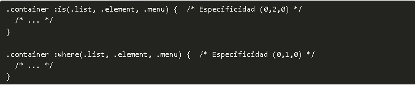

En algunas ocasiones, puede ser deseable agrupar varios selectores con el fin de reducir la cantidad de código o reutilizar bloques de CSS en diversas situaciones, lo que hace que los estilos sean más versátiles y eficientes.
La forma más sencilla de conseguir esto, es crear agrupaciones con diferentes selectores separando por
AGRUPACION DE SELECTORES
Imagina una situación en la que varios bloques de código CSS contienen las mismas propiedades con los mismos valores. Generalmente, escribir cada bloque de forma individual no es apropiado, ya que duplica un código que es exactamente igual:
Si esto ocurre a menudo, el tamaño del documento CSS será más grande y tardará más en descargarse. Una buena práctica para evitarlo es ahorrar texto y simplificar nuestro documento CSS lo máximo posible, por lo que podemos hacer uso de la agrupación CSS utilizando el símbolo de la coma.
Simplifica por responsabilidades: .container-alert y .container-warning parecen tener un concepto muy similar: alertas o mensajes de advertencia. Es posible que estos selectores tengan la misma funcionalidad y sean sinónimos.
Si es así, lo ideal sería refactorizar y simplificarlos a uno: .container-warning, haciendo desaparecer el otro.
Legibilidad por delante: El código CSS por si sólo puede ser difícil de leer y mantener. Aunque a priori puede parecer que es mejor escribir la lista de selectores uno detrás de otro, la experiencia nos dicta que deberíamos separarlos en una línea diferente cada selector. Esto lo hace mucho más legible a la hora de leer.
Estos consejos pueden parecer poco importantes, pero a medida que avanzamos con nuestro diseño y escribimos más código CSS, este se hace muy grande y difícil de mantener, por lo que cuanto más sencillo lo mantengamos, mejor.
Sin embargo, las comas sólo son la forma más sencilla y simple de reutilizar selectores. En CSS, tenemos a nuestra disposición una serie de mecanismos para agrupar o combinar selectores de una forma más potente y flexible, dentro de una categoría denominada combinadores lógicos.
Estos combinadores lógicos nos permiten seleccionar elementos con ciertas restricciones y funcionan como una pseudoclase (ver más adelante), solo que se le pueden pasar parámetros, ya que son de tipo pseudoclase funcional.
Selector
Descripcion
:is()
Agrupaciones. Idem al anterior, pero permite combinar con otros selectores.
where()
Agrupaciones. Idem al anterior, pero con menor especificidad CSS.
:has()
Permite seleccionar elementos padre que tengan ciertas características en sus hijos.
:not()
Permite seleccionar elementos que no cumplan ciertas características.
El combinador :is()
La pseudoclase funcional :is() es un reemplazo práctico de la agrupación de selectores mediante comas, que permite reescribir selectores complejos de una forma mucho más práctica y compacta, ya que permite combinar y acumular con otros selectores anteriores o posteriores a :is().
Esto nos permite crear un código mucho más compacto y sencillo de leer y escribir. Antiguamente, esta pseudoclase era conocida como :matches(), pero finalmente fue renombrada a :is(), por lo que es posible que nos la encontremos de esta forma si accedemos a documentación antigua.
El combinador :where()
El combinador :where() funciona exactamente igual que el combinador :is(), la única diferencia que tiene es en cuanto a la especificidad CSS. Mientras que con :is(), la especificidad es el valor más alto de la lista de parámetros, en el caso de :where() es siempre cero.

Este combinador :where() puede ser útil para casos en los que se quiere anular la especificidad de un elemento fácilemente si se sobreescribe con otro selector.
El combinador :has()
La pseudoclase :has() permite seleccionar el elemento precedido, si sus elementos hijos cumplen los criterios indicados por parámetro. Esto puede resultar un poco confuso, pero se ve claramente en el siguiente ejemplo:
En este caso, la propiedad text-decoration: none se aplica sobre el enlace /a/, sólo si en el interior del enlace existe una etiqueta /img/. Este ejemplo podría ser muy útil para eliminar estilos sobre imágenes que son enlaces.
Algunos detalles interesantes sobre la pseudoclase funcional :has():
La pseudoclase :has() no se puede anidar dentro de otra :has().
Los pseudoelementos como ::before o ::after no funcionan dentro de :has().
La especificidad de :has() es el valor más alto de los selectores indicados por parámetro.
El combinador :not()
La pseudoclase de negación :not() es muy útil, ya que permite seleccionar todos los elementos que no cumplan los criterios indicados en sus parámetros entre paréntesis.Veamos un sencillo ejemplo:
Este pequeño fragmento de código nos indica que todos los párrafos /p/ que no pertenezcan a la clase .general, se les aplique el estilo especificado.
Algunos detalles adicionales sobre la pseudoclase funcional :not():
Se puede indicar una lista de criterios por parámetro, y no uno solo (como en el ejemplo anterior).
La pseudoclase :not() no acepta pseudoelementos como ::before o ::after por parámetro.
Al igual que con :is(), la especificidad de :not() es el valor más alto de sus parámetros.


 Este pequeño fragmento de código nos indica que todos los párrafos /p/ que no pertenezcan a la clase .general, se les aplique el estilo especificado.
Este pequeño fragmento de código nos indica que todos los párrafos /p/ que no pertenezcan a la clase .general, se les aplique el estilo especificado.